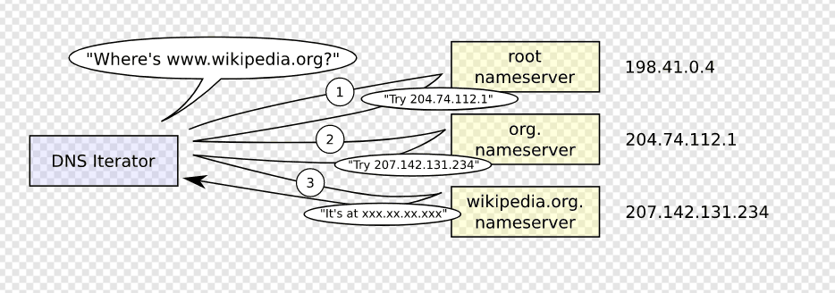
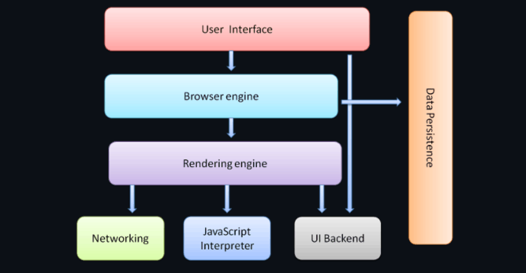

网络是如何运作的？
当我们在浏览器中输入 google.com 时，背后会发生什么？
1.当 google 的“g”键被按下
当您只需要按下“g”时，浏览器就会收到该事件，整个自动完成机器就会进入高速运转状态。根据您的浏览器算法，如果您不是处于私密/隐身模式，则网址栏下方的Dropbox中会显示各种建议。这些算法中的大多数都根据搜索历史记录和书签对结果进行优先级排序。您将会不会继续输入“google.com”因此都无关紧要，但是在您到达那里之前会运行大量代码，并且每次按键都会优化建议。它甚至可能在您输入之前就已经推荐“google.com”。
2.当您点击“ENTER”时
选择一个零点（我没看懂😅原文是To pick a zero point），我们按下键盘上的 Enter 键。此时，特定于回车键的电路被关闭（直接或电容）。这允许少量电流流入键盘的逻辑电路，键盘扫描每个按键开关的状态，消除开关快速间歇闭合的电噪声，并将其转换为键码整数。然后，键盘控制器对键码进行编码，以便传输到计算机。现在，这几乎普遍通过通用串行总线（USB）或蓝牙连接。
对于 USB 键盘：
• 生成的键码由内部键盘电路存储器存储在称为“端点”的寄存器中。
• 主机 USB 控制器每大约 10 毫秒轮询一次“端点”，因此它获取存储在其上的键码值。
• 此值将转到以 1.5 Mb/s （USB 2.0） 的最大速度发送的 USB SIE（串行接口引擎）。
• 然后，此串行信号在计算机的主 USB 控制器上进行解码，并由计算机的人机接口设备 （HID） 通用键盘设备驱动程序进行解释。
• 然后，密钥的值将传递到操作系统的硬件抽象层。
在触摸屏键盘的情况下：
• 当用户将手指放在现代电容式触摸屏上时，少量电流被传输到手指上。这通过导电层的静电场完成电路，并在屏幕上的该点产生压降。然后，屏幕控制器引发一个中断，报告“单击”的坐标。
• 然后，移动操作系统在其 GUI 元素之一（现在是虚拟键盘应用程序按钮）中通知当前关注的应用程序单击事件。
• 虚拟键盘现在可以引发软件中断，以将“按键按下”消息发送回操作系统。
• 此中断通知当前聚焦的应用程序“按键”事件。
3.解析网址
浏览器现在在 URL（统一资源定位器）中包含以下信息：
• 协议“http”：使用“超文本传输协议”
• 资源“/”：检索主（索引）页
当没有给出协议或有效域名时，浏览器继续将地址框中给出的文本提供给浏览器的默认Web搜索引擎。
4.检查 HSTS 列表（已弃用）
• 浏览器检查其“预加载的HSTS（HTTP严格传输安全）”列表。这是仅请求通过HTTPS联系的网站列表。
• 如果网站在列表中，浏览器将通过HTTPS而不是HTTP发送其请求。否则，初始请求将通过 HTTP 发送。
注意：该网站仍然可以使用HSTS策略，而不会在HSTS列表中。用户对网站的第一个 HTTP 请求将收到一个响应，请求用户仅发送 HTTPS 请求。但是，此单个 HTTP 请求可能会使用户容易受到降级攻击，这就是 HSTS 列表包含在现代 Web 浏览器中的原因。
现代浏览器首先请求https
5.域名系统查找
浏览器尝试找出输入域的 IP 地址。DNS 查找按如下方式进行：
• 浏览器缓存：浏览器将 DNS 记录缓存一段时间。有趣的是，操作系统不会告诉浏览器每个DNS记录的生存时间，因此浏览器会将它们缓存固定的持续时间（因浏览器而异，2-30分钟）。
• 操作系统缓存：如果浏览器缓存不包含所需的记录，则浏览器将进行系统调用（在 Windows 中为 gethostbyname）。操作系统有自己的缓存。
• 路由器缓存：请求继续发送到您的路由器，该路由器通常具有自己的DNS缓存。
• ISP DNS 缓存：检查的下一个位置是缓存 ISP 的 DNS 服务器。当然，使用缓存。
• 递归搜索：您的 ISP 的 DNS 服务器开始递归搜索，从根名称服务器到.com顶级名称服务器，再到 Google 的名称服务器。通常，DNS 服务器将在缓存中具有.com名称服务器的名称，因此不需要命中根名称服务器。
下图显示了递归 DNS 搜索的外观：
关于DNS的一个令人担忧的事情是，整个域（如 wikipedia.org 或 facebook.com）似乎映射到单个IP地址。幸运的是，有一些方法可以缓解瓶颈：
• 轮循机制 是一种解决方案，其中 DNS 查找返回多个 IP 地址，而不仅仅是一个 IP 地址。例如，facebook.com 实际上映射到四个 IP 地址。
• 负载平衡器是侦听特定 IP 地址并将请求转发到其他服务器的硬件。主要站点通常使用昂贵的高性能负载平衡器。
• 地理 DNS 通过将域名映射到不同的 IP 地址（具体取决于客户端的地理位置）来提高可伸缩性。这非常适合托管静态内容，以便不同的服务器不必更新共享状态。
• 任播是一种路由技术，其中单个 IP 地址映射到多个物理服务器。不幸的是，任播不适合TCP，并且很少在这种情况下使用。
大多数 DNS 服务器本身使用任播来实现 DNS 查找的高可用性和低延迟。任播服务的用户（DNS就是一个很好的例子）将始终连接到“最近”（从路由协议的角度来看）DNS服务器。这减少了延迟，并提供了一定程度的负载平衡（假设您的使用者均匀分布在您的网络中）。
6.打开套接字 + TLS 握手
• 一旦浏览器收到目标服务器的 IP 地址，它就会从 URL 中获取该 IP 地址和给定的端口号（HTTP 协议默认为端口 80，HTTPS 默认为端口 443），并调用名为 socket 的系统库函数并请求 TCP 套接字流。
• 客户端计算机向服务器发送 ClientHello 消息，其中包含其 TLS 版本、密码算法列表和可用的压缩方法。
• 服务器使用 TLS 版本、选定的密码、选定的压缩方法以及由 CA（证书颁发机构）签名的服务器公共证书向客户端回复 ServerHello 消息。该证书包含一个公钥，客户端将使用该公钥对握手的其余部分进行加密，直到可以商定对称密钥为止。
• 客户端根据其受信任的 CA 列表验证服务器数字证书。如果可以基于 CA 建立信任，则客户端会生成一串伪随机字节，并使用服务器的公钥对其进行加密。这些随机字节可用于确定对称密钥。
• 服务器使用其私钥解密随机字节，并使用这些字节生成自己的对称主密钥副本。
• 客户端向服务器发送“已完成”消息，使用对称密钥加密到目前为止的传输哈希。
• 服务器生成自己的哈希，然后解密客户端发送的哈希以验证其匹配。如果是这样，它将自己的“完成”消息发送到客户端，该消息也使用对称密钥进行加密。
• 从现在开始，TLS 会话将传输使用商定的对称密钥加密的应用程序 （HTTP） 数据。
7.HTTP协议
您可以非常确定，诸如Facebook / Gmail之类的动态网站不会从浏览器缓存中提供，因为动态页面会很快或立即过期（到期日期设置为过去）。
如果使用的Web浏览器是由Google编写的，则它将发送请求以尝试与服务器协商从HTTP“升级”到SPDY协议的请求，而不是发送HTTP请求来检索该页面。请注意，SPDY正在被弃用，取而代之的是最新版本的Chrome中的HTTP / 2。
GET http://www.google.com/ HTTP/1.1
Accept: application/x-ms-application, image/jpeg, application/xaml+xml, [...]
User-Agent: Mozilla/4.0 (compatible; MSIE 8.0; Windows NT 6.1; WOW64; [...]
Accept-Encoding: gzip, deflate
Connection: Keep-Alive
Host: google.com
Cookie: datr=1265876274-[...]; locale=en_US; lsd=WW[...]; c_user=2101[...]
GET 请求将要获取的 URL 命名为：“http://www.google.com/”。浏览器标识自身（User-Agent 标头），并声明它将接受哪些类型的响应（接受和接受编码标头）。连接标头要求服务器保持 TCP 连接打开，以便进一步请求。
该请求还包含浏览器对此域具有的 Cookie。您可能已经知道，Cookie 是在不同页面请求之间跟踪网站状态的键值对。因此，Cookie存储登录用户的名称，服务器分配给用户的密码号，用户的一些设置等。Cookie将存储在客户端上的文本文件中，并随每个请求一起发送到服务器。
HTTP/1.1 定义了“关闭”连接选项，发送方发出信号，表明连接将在响应完成后关闭。例如，连接：关闭。
发送请求和标头后，Web 浏览器会向服务器发送一个空白换行符，指示请求的内容已完成。服务器使用表示请求状态的响应代码进行响应，并使用以下形式的响应进行响应：200 OK [响应标头]
后跟一个换行符，然后发送 www.google.com 的 HTML 内容的有效负载。然后，服务器可以关闭连接，或者如果客户端发送的标头请求它，则保持连接打开状态，以便重新用于进一步的请求。
如果Web浏览器发送的HTTP标头包含足够的信息，以便Web服务器确定Web浏览器缓存的文件版本自上次检索以来是否未被修改（即，如果Web浏览器包含ETag标头），则它可以改为响应以下形式的请求：304未修改[响应标头]并且没有有效负载， 并且 Web 浏览器会从其缓存中检索 HTML。
解析HTML后，Web浏览器（和服务器）对HTML页面引用的每个资源（图像，CSS，favicon.ico等）重复此过程，除了GET / HTTP / 1.1请求将是GET / $ （相对于 www.google.com URL）HTTP / 1.1。
如果 HTML 引用的资源与 www.google.com 域不同，则 Web 浏览器将返回到解析其他域所涉及的步骤，并按照该域到目前为止的所有步骤进行操作。请求中的 Host 标头将设置为相应的服务器名称，而不是 google.com。
Gotcha：• URL“http://facebook.com/”中的尾部斜杠很重要。在这种情况下，浏览器可以安全地添加斜杠。对于 http://example.com/folderOrFile 形式的 URL，浏览器无法自动添加斜杠，因为不清楚 folderOrFile 是文件夹还是文件。在这种情况下，浏览器将访问不带斜杠的 URL，服务器将使用重定向进行响应，从而导致不必要的往返。
• 服务器可能会以“301 Move Permanently”响应进行响应，以告知浏览器转到“http://www.google.com/”而不是“http://google.com/”。服务器坚持重定向而不是立即响应用户想要查看的网页的原因很有趣。其中一个原因与搜索引擎排名有关。看，如果同一页面有两个URL，比如 http://www.vasanth.com/ 和 http://vasanth.com/，搜索引擎可能会认为它们是两个不同的网站，每个网站的传入链接较少，因此排名较低。搜索引擎了解永久重定向（301），并将来自两个来源的传入链接合并到一个排名中。此外，同一内容的多个 URL 对缓存不友好。当一段内容具有多个名称时，它可能会在缓存中多次出现。
注意：HTTP 响应从服务器返回的状态代码开始。以下是状态代码所表示内容的非常简短的摘要：
• 1xx 仅表示信息性消息
• 2xx 表示某种成功
• 3xx 将客户端重定向到另一个 URL
• 4xx 表示客户端部分的错误
• 5xx 表示服务器部分的错误
8.HTTP 服务器请求句柄
HTTPD（HTTP 守护程序）服务器是处理服务器端请求/响应的服务器。最常见的HTTPD服务器是Apache或nginx for Linux和IIS for Windows。
• HTTPD（HTTP 守护程序）接收请求。
• 服务器将请求分解为以下参数：
▫ HTTP 请求方法（获取、发布、HEAD、放置和删除）。如果直接在地址栏中输入 URL，则为 GET。
▫ 域，在本例中为 google.com。
▫ 请求的路径/页面，在本例中为 - / （因为没有请求特定的路径/页面，/ 是默认路径）。
▫ 服务器验证服务器上是否配置了与 google.com 相对应的虚拟主机。
• 服务器验证 google.com 是否可以接受 GET 请求。
• 服务器验证是否允许客户端使用此方法（通过 IP、身份验证等）。
• 如果服务器安装了重写模块（如 Apache 的mod_rewrite或 IIS 的 URL 重写），它会尝试将请求与配置的规则之一进行匹配。如果找到匹配的规则，服务器将使用该规则重写请求。
• 服务器去拉取与请求对应的内容，在我们的例子中，它将回退到索引文件，因为“/”是主文件（在某些情况下可以覆盖它，但这是最常用的方法）。
• 服务器根据请求处理程序分析文件。请求处理程序是一个程序（在 ASP.NET，PHP，Ruby等中），它读取请求并为响应生成HTML。如果 Google 在 PHP 上运行，则服务器使用 PHP 来解释索引文件，并将输出流式传输到客户端。
注意：每个动态网站面临的一个有趣的困难是如何存储数据。较小的站点通常具有单个 SQL 数据库来存储其数据，但存储大量数据和/或具有许多访问者的站点必须找到一种跨多台计算机拆分数据库的方法。解决方案包括分片（基于主键在多个数据库之间拆分表）、复制以及使用具有弱化一致性语义的简化数据库。
9.服务器响应
以下是服务器生成并发回的响应：
HTTP/1.1 200 OK
Cache-Control: private, no-store, no-cache, must-revalidate, post-check=0,
pre-check=0
Expires: Sat, 01 Jan 2000 00:00:00 GMT
P3P: CP="DSP LAW"
Pragma: no-cache
Content-Encoding: gzip
Content-Type: text/html; charset=utf-8
X-Cnection: close
Transfer-Encoding: chunked
Date: Fri, 12 Feb 2010 09:05:55 GMT
2b3
��������T�n�@����[...]
整个响应是 36 kB，其中大部分位于我修剪的末尾的字节 blob 中。
内容编码标头告诉浏览器响应正文是使用 gzip 算法压缩的。解压缩 Blob 后，你将看到你期望的 HTML：（因为编码原因代码中的‘《’需要改成‘<’）
《!DOCTYPE html PUBLIC "-//W3C//DTD XHTML 1.0 Strict//EN"
"http://www.w3.org/TR/xhtml1/DTD/xhtml1-strict.dtd">
《html xmlns="http://www.w3.org/1999/xhtml" xml:lang="en"
lang="en" id="google" class=" no_js">
《head>
《meta http-equiv="Content-type" content="text/html; charset=utf-8" />
《meta http-equiv="Content-language" content="en" />
...
请注意将内容类型设置为 text/html 的标题。标头指示浏览器将响应内容呈现为 HTML，而不是将其下载为文件。浏览器将使用标头来决定如何解释响应，但也将考虑其他因素，例如URL的扩展名。
10.浏览器幕后花絮
一旦服务器向浏览器提供资源（HTML，CSS，JS，图像等），它就会经历以下过程：
• 解析 - HTML， CSS， JS
• 渲染 - →渲染树构建 DOM 树 → 渲染树的布局 → 绘制渲染树
11.浏览器的高级结构
1.用户界面：包括地址栏，后退/前进按钮，书签菜单等。浏览器的每个部分都会显示，但您看到所请求页面的窗口除外。
2.浏览器引擎：封送 UI 和呈现引擎之间的操作。
3.渲染引擎：负责显示请求的内容。例如。呈现引擎解析 HTML 和 CSS，并在屏幕上显示解析的内容。
4.联网：对于 HTTP 请求等网络调用，对不同的平台使用不同的实现（在独立于平台的接口后面）。
5.用户界面后端：用于绘制基本小部件，如组合框和窗口。此后端公开一个不特定于平台的通用接口。在它下面使用操作系统用户界面方法。
6.JavaScript Engine：用于解析和执行 JavaScript 代码的解释器。
7.数据存储：这是一个持久性层。浏览器可能需要在本地保存数据，例如 Cookie。浏览器还支持本地存储、IndexedDB 和 FileSystem 等存储机制。
让我们从最简单的情况开始：一个包含一些文本和单个图像的纯HTML页面。浏览器需要做什么来处理这个简单的页面？
1.Conversion(转换)：浏览器从磁盘或网络读取HTML的原始字节，并根据指定的文件编码（例如UTF-8）将它们转换为单个字符。
2.Tokenizing(标记化)：浏览器将字符串转换为W3C HTML5标准指定的不同标记 - 例如“”，“”，“”和“尖括号”内的其他字符串。每个令牌都有特殊的含义和一组规则。
3.Lexing(分析)：发出的令牌被转换为定义其属性和规则的“对象”。
4.DOM construction(DOM 结构)：最后，由于 HTML 标记定义了不同标记之间的关系（某些标记包含在标记中），因此创建的对象链接在树数据结构中，该结构还捕获原始标记中定义的父子关系：HTML 对象是正文对象的父对象，正文是段落对象的父对象，依此类推。

整个过程的最终输出是文档对象模型，或我们简单页面的“DOM”，浏览器使用它来进一步处理页面。
每次浏览器必须处理HTML标记时，它都必须逐步执行上述所有步骤：将字节转换为字符，识别标记，将令牌转换为节点以及构建DOM树。整个过程可能需要一些时间，特别是如果我们要处理大量的HTML。

如果您在加载页面时打开Chrome DevTools并记录时间轴，则可以看到执行此步骤所需的实际时间 - 在上面的示例中，我们花了大约5毫秒将一块HTML字节转换为DOM树。当然，如果页面像大多数页面一样大，则此过程可能需要更长的时间。您将在我们以后关于创建流畅动画的章节中看到，如果浏览器必须处理大量HTML，这很容易成为您的瓶颈。
12.渲染引擎
渲染引擎是一个软件组件，它获取标记的内容（如 HTML、XML、图像文件等）和格式信息（如 CSS、XSL 等），并在屏幕上显示格式化的内容。

WebKit是一个开源渲染引擎，最初是Linux平台的引擎，并被Apple修改为支持Mac和Windows。
渲染引擎是单线程的。除了网络操作之外，几乎所有事情都发生在单个线程中。在Firefox和Safari中，这是浏览器的主线程。在Chrome中，它是选项卡进程的主线程。网络操作可以由多个并行线程执行。并行连接的数量是有限的（通常每个主机名 6-13 个连接）。
浏览器主线程是一个事件循环。这是一个无限循环，使流程保持活力。它等待事件（如布局和绘画事件）并处理它们。
注意：Chrome 等浏览器会运行渲染引擎的多个实例：每个标签页对应一个实例。每个选项卡都在单独的进程中运行。
13.数据渲染流程(不知道怎么翻译，原文是：The Main flow)
渲染引擎将开始从网络层获取所请求文档的内容。这通常以 8KB 的块形式完成。
之后，渲染引擎的基本流程是：

渲染引擎将开始解析 HTML 文档，并将元素转换为称为“内容树”的树中的 DOM 节点。
引擎将解析外部 CSS 文件和样式元素中的样式数据。样式信息以及 HTML 中的可视说明将用于创建另一个树：呈现树。渲染树包含具有可视属性（如颜色和尺寸）的矩形。矩形按正确的顺序显示在屏幕上。
在构建渲染树之后，它会经历一个“布局”过程。这意味着为每个节点提供它应该出现在屏幕上的确切坐标。
下一个阶段是绘制 - 将遍历渲染树，并使用 UI 后端层绘制每个节点。
重要的是要明白，这是一个渐进的过程。为了获得更好的用户体验，渲染引擎会尽快尝试在屏幕上显示内容。它不会等到所有HTML都被解析后才开始构建和布局渲染树。部分内容将被解析和显示，而该过程继续处理来自网络的其余内容。
下面给出的是Webkit的流程：

14.解析基础知识
解析：将文档转换为代码可以使用的结构。解析的结果通常是表示文档结构的节点树。
语法：解析基于文档遵循的语法规则：编写文档的语言或格式。您可以解析的每种格式都必须具有由词汇表和语法规则组成的确定性语法。它被称为context free grammar(上下文无关语法...)。
解析可以分为两个子过程：词法分析和语法分析。
词法分析：将输入分解为标记的过程。令牌是语言词汇表：有效构建基块的集合。
语法分析：语言语法规则的应用。
解析器通常将工作分为两个组件：词法分析器（有时称为分词器），负责将输入分解为有效标记，以及负责通过根据语言语法规则分析文档结构来构造解析树的解析器。词法分析器知道如何去除不相关的字符，如空格和换行符。

解析过程是迭代的。解析器通常会要求词法分析器提供新令牌，并尝试将令牌与其中一个语法规则匹配。如果规则匹配，则与令牌对应的节点将添加到解析树中，解析器将请求另一个令牌。
如果没有匹配的规则，解析器将在内部存储令牌，并继续要求令牌，直到找到与所有内部存储的令牌匹配的规则。如果未找到任何规则，则解析器将引发异常。这意味着文档无效，并且包含语法错误。
HTML 解析器的工作是将 HTML 标记解析为解析树。HTML 定义采用 DTD（文档类型定义）格式。此格式用于定义 SGML 系列的语言。该格式包含所有允许的元素、其属性和层次结构的定义。正如我们之前所看到的，HTML DTD并不构成上下文无关的语法。
HTML解析算法由两个阶段组成：标记化和树构造。
标记化是词法分析，将输入解析为标记。HTML 标记包括开始标记、结束标记、属性名称和属性值。分词器识别令牌，将其提供给树构造函数，并使用下一个字符来识别下一个令牌，依此类推，直到输入结束。

15.DOM树(DOM Tree))
输出树（"parse tree(解析树)"）是 DOM 元素和属性节点的树。DOM 是文档对象模型的缩写。它是HTML文档的对象呈现和HTML元素与外部世界的接口，如JavaScript。树的根是"Document"对象。
DOM 与标记几乎具有一对一的关系。例如：
《html>
《body>
《p>
Hello World
《/p>
《div> 《img src="example.png"/>《/div>
《/body>
《/html>
此标记将转换为以下 DOM 树：

为什么 DOM 很慢？
简短的答案是DOM并不慢。添加和删除 DOM 节点是几个指针交换，只不过是在 JS 对象上设置一个属性。
但是，布局很慢。当你以任何方式触摸DOM时，你在整个树上设置了一个脏位，告诉浏览器它需要弄清楚一切再次去哪里。当JS将控制权交还给浏览器时，它会调用其布局算法（或者更技术地说，它调用其CSS重新计算算法，然后布局，然后重新绘制，然后重新合成）来重绘屏幕。布局算法非常复杂 - 阅读CSS规范以了解一些规则 - 这意味着它通常必须做出非本地决策。
更糟糕的是，布局是通过访问某些属性同步触发的。其中包括getComputedStyleValue（），getBoundingClientWidth（），.offsetWidth，.offsetHeight等，这使得它们非常容易遇到。正因为如此，很多Angular和JQuery代码都非常慢。一个布局就会在移动设备上破坏整个框架预算。当我在2013年测量Google Instant时，它在一个查询中导致了13个布局，并在移动设备上锁定了屏幕近2秒钟。（它已经被加速了。
React 无助于加快布局速度 - 如果你想在移动 Web 浏览器上制作流畅的动画，你需要求助于其他技术，比如将你在帧中执行的所有操作限制在 GPU 上可以执行的操作。但它所做的是确保每次更新页面状态时最多执行一个布局。这通常是对现状的极大改进。
16.Render Tree(渲染树的构造..?，希望翻译得没错:)
在构造 DOM 树时，浏览器构造另一个树，即呈现树。此树是按显示顺序排列的可视元素。它是文档的可视表示形式。此树的目的是使内容能够以正确的顺序进行绘制。
渲染器知道如何布局和绘制自身及其子级。每个渲染器表示一个矩形区域，通常对应于节点的 CSS 框。
17.渲染树与DOM树的关系(Render tree's relation to the DOM tree)
渲染器对应于 DOM 元素，但关系不是一对一的。非可视 DOM 元素不会插入到呈现树中。例如，“head”元素。此外，显示值指定为“无”的元素将不会出现在树中（而具有“隐藏”可见性的元素将出现在树中）。
有对应于多个可视对象的 DOM 元素。这些通常是具有复杂结构的元素，不能用单个矩形来描述。例如，“select”元素有三个呈现器：一个用于显示区域，一个用于下拉列表框，一个用于按钮。此外，当文本由于宽度不足以容纳一行而分成多行时，新行将添加为额外的呈现器。
一些渲染对象对应于 DOM 节点，但不在树中的同一位置。浮点数和绝对定位的元素不在流动中，放置在树的不同部分，并映射到真实帧。占位符框架是它们应该存在的位置。

在 WebKit 中，解析样式和创建渲染器的过程称为“附件”。每个 DOM 节点都有一个“attach”方法。附件是同步的，节点插入 DOM 树调用新节点“attach”方法。
构建呈现树需要计算每个呈现对象的视觉属性。这是通过计算每个元素的样式属性来完成的。样式包括各种来源的样式表、HTML 中的内联样式元素和视觉属性（如“bgcolor”属性）。后者被转换为匹配的 CSS 样式属性。
18.CSS 解析
CSS 选择器由浏览器引擎从右到左匹配。请记住，当浏览器进行选择器匹配时，它有一个元素（它试图确定样式的元素）和所有规则及其选择器，它需要找到哪些规则与元素匹配。这与通常的jQuery不同，例如，在jQuery中，您只有一个选择器，并且您需要找到与该选择器匹配的所有元素。
选择器的特异性计算如下：
• 如果它来自的声明是“style”属性而不是带有选择器的规则，则计数 1，否则计数 0 （= a）
• 计算选择器中 ID 选择器的数量 （= b）
• 计算选择器中类选择器、属性选择器和伪类的数量 （= c）
• 计算选择器中元素名称和伪元素的数量 （= d）
• 忽略通用选择器
将三个数字 a-b-c-d（在具有大基数的数字系统中）连接起来可提供特异性。您需要使用的数字基数由 a、b、c 和 d 之一中的最高计数定义。
例子：
* /* a=0 b=0 c=0 -> specificity = 0 */
LI /* a=0 b=0 c=1 -> specificity = 1 */
UL LI /* a=0 b=0 c=2 -> specificity = 2 */
UL OL+LI /* a=0 b=0 c=3 -> specificity = 3 */
H1 + *[REL=up] /* a=0 b=1 c=1 -> specificity = 11 */
UL OL LI.red /* a=0 b=1 c=3 -> specificity = 13 */
LI.red.level /* a=0 b=2 c=1 -> specificity = 21 */
#x34y /* a=1 b=0 c=0 -> specificity = 100 */
#s12:not(FOO) /* a=1 b=0 c=1 -> specificity = 101 */
为什么CSSOM有树结构？当计算页面上任何对象的最终样式集时，浏览器从适用于该节点的最一般规则开始（例如，如果它是body元素的子级，则所有正文样式都适用），然后通过应用更具体的规则（即规则“级联向下”）递归地优化计算的样式。
WebKit 使用一个标志来标记是否已加载所有顶级样式表（包括@imports）。如果在附加时未完全加载样式，则使用占位符并在文档中标记该占位符，并且在加载样式表后将重新计算占位符。
19.布局(说实话这里我没看懂:)
创建渲染器并将其添加到树中时，它没有位置和大小。计算这些值称为布局或回流。
HTML使用基于流的布局模型，这意味着大多数时候可以在一次传递中计算几何图形。“流中”后面的元素通常不会影响“流中”中较早的元素的几何图形，因此布局可以按文档从左到右、从上到下的顺序进行。坐标系相对于根框架。使用顶部和左侧坐标。
布局是一个递归过程。它从根呈现器开始，该呈现器对应于 HTML 文档的元素。布局继续以递归方式通过部分或全部帧层次结构，为需要布局的每个渲染器计算几何信息。
根呈现器的位置为 0，0，其尺寸是视区，即浏览器窗口的可见部分。所有呈现器都有一个“布局”或“重排”方法，每个呈现器调用其子级需要布局的布局方法。
为了不为每一个微小的变化做一个完整的布局，浏览器使用“dirty bit(脏位??)”系统。更改或添加的呈现器将自身及其子级标记为“dirty(脏)”：需要布局。有两个标志："dirty", and "children are dirty"(“脏”和“子级是脏的”)，这意味着尽管渲染器本身可能没问题，但它至少有一个需要布局的子级。
布局通常具有以下模式：
• 父渲染器决定自己的宽度。
• 父渲染器超过子渲染器，然后：
▫ 放置子渲染器（设置其 x 和 y）。
▫ 如果需要，请调用子布局 - 它们是脏的(dirty)，或者我们处于全局布局中，或者出于其他原因 - 计算子布局的高度。
• Parent 使用子级的累积高度以及边距和填充的高度来设置其自身的高度 - 这将由父级渲染器的父级使用。
• 将其dirty bit(脏位)设置为 false。
另请注意，布局抖动是指 Web 浏览器在“加载”网页之前必须多次重排或重绘网页。在JavaScript流行之前的日子里，网站通常只重排和绘制一次，但现在JavaScript在页面加载上运行变得越来越普遍，这可能导致对DOM的修改，从而导致额外的重排或重绘。根据回流的次数和网页的复杂程度，加载页面时可能会导致明显的延迟，尤其是在手机或平板电脑等功率较低的设备上。
20.painting
在绘制阶段，遍历呈现树，并调用呈现器的“paint（）”方法以在屏幕上显示内容。绘画使用 UI 基础结构组件。
与布局一样，绘画也可以是全局的（绘制整个树）或增量。在增量绘制中，某些渲染器的更改方式不会影响整个树。更改后的呈现器会使屏幕上的矩形失效。这会导致操作系统将其视为“脏区域”并生成“paint”事件。操作系统巧妙地做到了这一点，并将几个区域合并为一个区域。
在重新绘制之前，WebKit 会将旧矩形另存为位图。然后，它仅绘制新矩形和旧矩形之间的增量。浏览器尝试执行尽可能少的操作来响应更改。因此，对元素颜色的更改只会导致元素的重绘。对元素位置的更改将导致元素、其子元素和可能的同级元素的布局和重绘。添加 DOM 节点将导致节点的布局和重新绘制。重大变化，例如增加“html”元素的字体大小，将导致缓存失效，中继和整个树的重绘。
有三种不同的定位方案：
•正常：根据对象在文档中的位置定位对象。这意味着它在渲染树中的位置就像它在DOM树中的位置一样，并根据其框类型和尺寸进行布局
•浮点数：首先像正常流动一样布置对象，然后尽可能向左或向右移动
•绝对：对象放置在渲染树中与 DOM 树中不同的位置
定位方案由 “position” 属性和 “float” 属性设置。
•静态和相对导致正常流动
•绝对和固定导致绝对定位
在静态定位中，不定义位置，而是使用默认定位。在其他方案中，作者指定了位置：顶部，底部，左侧，右侧。
图层由 z 索引 CSS 属性指定。它代表盒子的第三个维度：它沿着“z轴”的位置。
这些框被划分为多个堆栈（称为堆叠上下文）。在每个堆栈中，后部元素将首先绘制，前置元素将位于顶部，更靠近用户。在重叠的情况下，最重要的元素将隐藏前一个元素。堆栈根据 z 索引属性进行排序。具有“z 索引”属性的框形成本地堆栈。
21.琐事
网络的诞生欧洲核子研究中心的英国科学家蒂姆·伯纳斯-李（Tim Berners-Lee）于1989年发明了万维网（WWW）。网络最初是为了满足世界各地大学和研究所科学家之间自动信息共享的需求而构思和开发的。
CERN的第一个网站 - 以及世界上 - 致力于万维网项目本身，并托管在Berners-Lee的NeXT计算机上。该网站描述了网络的基本功能;如何访问其他人的文档以及如何设置自己的服务器。NeXT机器 - 原始的Web服务器 - 仍然在CERN。作为恢复第一个网站的项目的一部分，CERN于2013年将世界上第一个网站恢复到原来的地址。
1993年4月30日，欧洲核子研究中心将万维网软件置于公共领域。CERN以开放许可证提供了下一个版本，作为最大化其传播的更可靠的方式。通过这些操作，使运行Web服务器所需的软件免费可用，以及基本的浏览器和代码库，Web被允许蓬勃发展。
好了，这就是本期当我们在浏览器中输入 google.com 时，背后会发生什么？的全部内容了。
🎵本期背景音乐：木漏れ日のささやき
感谢观看，我是冰渊(IceAbyss)，我们下期再见:)👋👋🏻👋🏼👋🏽👋🏾👋🏿
若有错漏或者维权的地方请联系我->邮箱📧iceabyss545@gmail.com